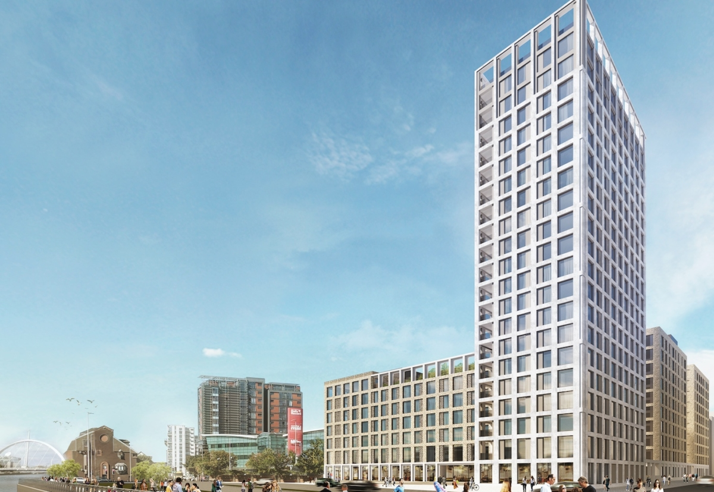
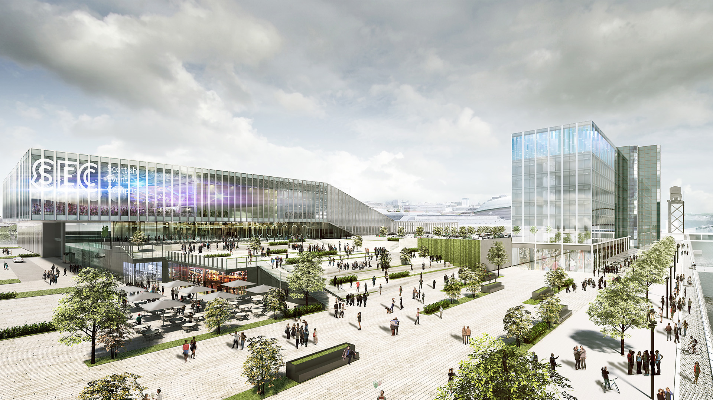

Glasgow Developments
Glasgow DevelopmentsA decent count of the number of construction cranes scattered around a city is indicative of its success and foreign direct investment.
Latest news: High Rise BTR (Built to Rent) by _Platform is under construction. Set to fully transfrom and initiating a regeneration at the Central Quay area alongside many investments lining up. Central Quay is a fascinating and intriguing city-centre project that prompts considerations of heritage, scale, proportion, morphology and connected permeability as a microcosm of Glasgow’s future direction for riverside regeneration.
Click here for more information. Image & Source by Keppie Designs.
Added on 29/07/2021.
Glasgow's highest skyscraper propsed and is being considered.
Recent news: Developers Watkin Jones Group are proposing to demolish Portcullis House on India Street at Charing Cross to make way for the new structure. The firm plans to construct a build-to-rent and co-living development comprising 825 units, including shops, a cafe and a co-working space. It purchased Portcullis House in August 2020 after the office block was put up for sale in May. The firm said that subject to planning, the development will be completed in 2024.
Click here for more information.Image & Source by BBC.
Added on 29/07/2021.
£0.2 Billion SEC transformation approved.
Recent news: Officials have given permission in principle for an extension to the exhibition and conference centre, more hotel accommodation, foyer/walkway/reception upgrade plus public realm works and landscaping. The SEC already being hugely successful, a statement from Keppie Design included with the application explained: “The company [Scottish Event Campus Ltd] has embraced an ambitious vision for the SEC to become the best event campus in Europe, adopting the following mission statement: Best Venues, Best People, Best Events.
Click here for more information. Image & Source by Keppie Designs.
Added on 29/07/2021.
Tallest skyscraper, Charing Cross co-living project planned with 685 homes.
Hundreds of new homes for rent are planned for Glasgow city centre in a co-living development where residents share living spaces. Watkin Jones Group has submitted an application for Portcullis House, the former HMRC building on India Street at Charing Cross. It will see the demolition of the existing building and construction of a build-to-rent (BTR) and a shared living development creating 685 new homes. This is made up of a 279-unit BTR development to the north of the site, adjacent to Charing Cross Station, and a 406 studio Co-Living development to the south of the site, adjacent to the Scottish Power Building.
Click here for more information.
Image & Source by Watkin Jones Group.
Added on 12/08/2021.